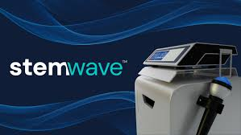
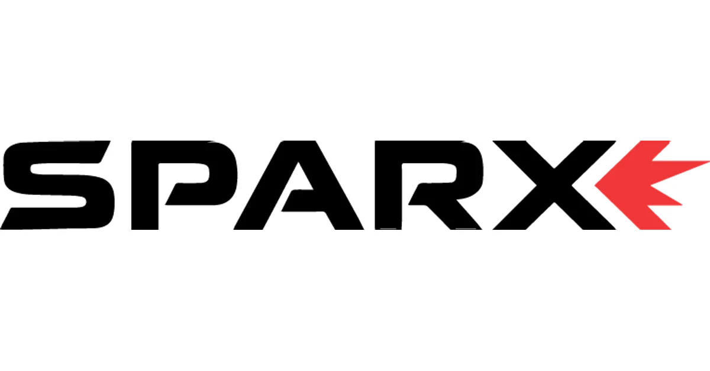
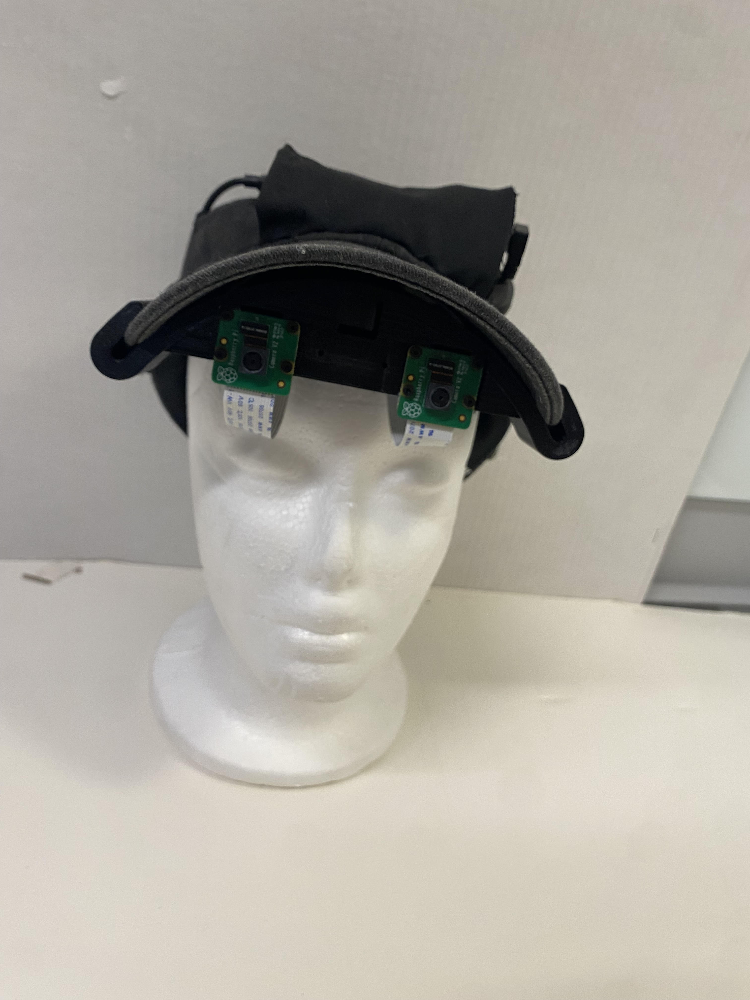
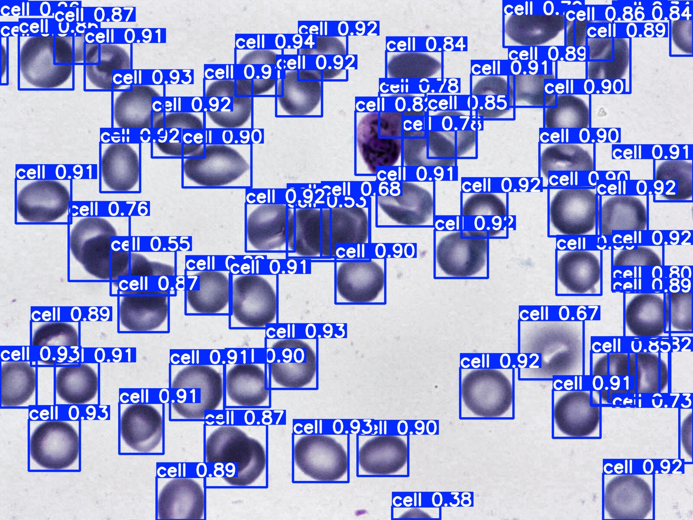
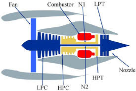
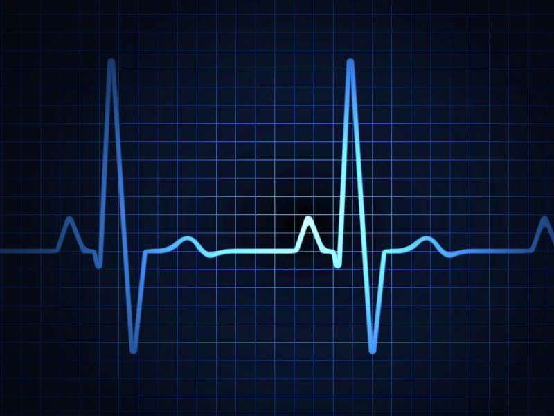
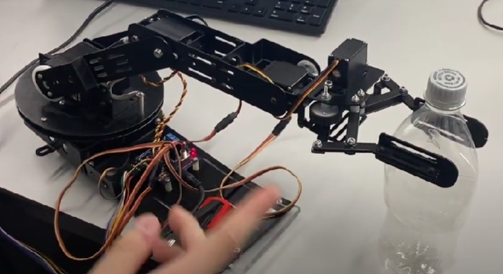
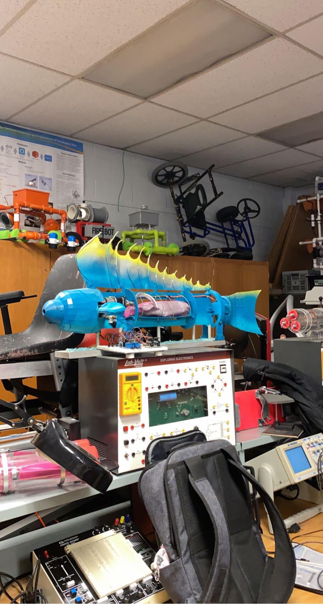

Some cool things I've done...

Product Development and R&D Co-op

Electrical and Computer Engineering Co-op

System for Envisioning Environments

YOLO based Cell Counter

Rust interface for LED drivers

CMAPPS Time Series ML

EKG Circuit

Single Cycle Datapath

Robotic Arm Programming

Finance Bros Database App

Coral Reef Research
My Skills
Programming Languages
C++, Java, Python, SQL, SystemVerilog, R, Rust, Embedded C
Software and Systems
Solidworks, AutoCAD, Autodesk Inventor, Arduino, Linux, Microsoft, Network Protocols, Machine Learning, Computer Vision, Github
Hardware
Microcontrollers, Raspberry Pi, Circuit Design, Power tools, Soldering